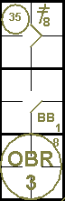
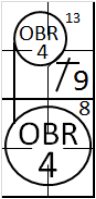

action { batter -> IF6 }

Un ‘Infield fly’, suivant la définition des termes des règles officielles du baseball“ C’est un ‘fly’ (chandelle) en territoire des bonnes balles (à l’exception d’un line drive ou d’un amorti) qui peut être attrapé par un joueur de champ intérieur avec un effort ordinaire, alors que la première et la seconde base ou la première, la seconde et la troisième base sont occupées, avant qu’il n’y ait deux retraits. Le lanceur, le receveur et tout joueur de champ extérieur qui se trouve dans le champ intérieur lors de ce jeu est considéré comme un joueur de champ intérieur pour l’application de ce règlement.
Quand il semble apparent qu’une balle frappée sera un infield fly, l’arbitre doit immédiatement crier « infield fly » au bénéfice des coureurs. Si la balle est proche des lignes de jeu, l’arbitre doit crier «infield fly, if fair »’.
Si une interférence est signalée lors d'un infield fly, la balle reste en jeu jusqu'à ce qu'il soit déterminé si elle est bonne ou mauvaise. Si elle est bonne, le coureur qui a gêné le joueur de champ et le frappeur sont tous deux éliminés. Si elle est mauvaise, même si la balle est attrapée, le coureur est éliminé et le frappeur retourne au bâton. .”
Lorsque l'arbitre déclare un infield fly, le frappeur est éliminé dès que l'arbitre prend sa décision, que la balle soit attrapée ou non.
L'objectif de cette règle est d'éviter de pénaliser l'équipe offensive en empêchant les joueurs de champ de laisser tomber intentionnellement la balle afin de réaliser un double jeu sur des coureurs forcés d'avancer.
Le frappeur est éliminé dès que l'arbitre annonce une balle intérieure, mais la balle reste en jeu ; les coureurs ne sont plus obligés d'avancer, sauf à leurs risques et périls.
Comme nous l'avons vu dans la section sur les retraits automatiques, lorsque la défense ne parvient pas à attraper la balle à la volée, nous utilisons l'abréviation « OBR » suivie du numéro du joueur de champ qui, de l'avis du scoreur officiel, aurait pu effectuer la prise, le numéro 8 de la règle étant à l'extérieur du cercle.
En revanche, lorsque la défense attrape la balle, on utilise l'abréviation « IF » suivie du numéro du joueur qui effectue la prise, sans le numéro de la règle, car l'élimination se fait sur une prise, et non par application d'une règle. L'abréviation « IF » est utilisée plutôt que « F » pour indiquer que l'arbitre a annoncé « Infifeld fly » ou « Infield fly if fair » alors que la balle était encore en l'air.
En ce qui concerne la notion d'infield fly, il convient de noter les cas intéressants suivants :
Si un coureur touche sa base lorsqu'il est touché par un infield fly, il n'est pas éliminé, même si le frappeur l'est. [OBR 5.09(b)(7)].
Si un coureur est touché par un infield fly alors qu'il ne touche pas sa base, le coureur et le frappeur sont tous deux éliminés. [OBR 5.09(b)(7)] et la balle est déclarée morte.
Si un infield fly déclaré tombe au sol sans être touchée en territoire des fausses balles et rebondit dans la zone des bonnes balles avant de dépasser le premier ou le troisième but, il s'agit d'un Infield fly.
Ces exemples montrent comment les événements sont enregistrés différemment selon que la balle tombe sans être touchée ou qu'elle soit attrapée.
Exemple 20: Avec les bases pleines et un retrait, le frappeur envoie une balle haute vers l'arrêt-court, l'arbitre déclare « Infield fly ». La balle est attrapée par l'arrêt-court.
| WBSC | Transcription dans l'outil de scorage | Outil |
|---|---|---|
|
|
/* Le batteur frappe une cloche en condition d'infield fly et la balle est rattrapée
de volée par l'arrêt court */ action { batter -> IF6 } |
|
Exemple 21:
Avec les bases pleines et un retrait, le batteur frapper une balle en hauteur en direction du défenseur de
la troisième base, et l’arbitre annonce ‘Infield fly if fair’. Quand la balle tombe, elle touche le coureur qui
est sur la troisième base.
Le frappeur est déclaré retiré en vertu de la règle 8 (« Retrait par règle »), et le retrait est attribué
au défenseur de la troisième base. Le coureur atteint par le lancer n'est pas retiré et reste sur la même base.
| WBSC | Transcription dans l'outil de scorage | Outil |
|---|---|---|

|
/* Le batteur frappe un cloche en condition d'infield fly et la balle en retombant
touche le coureur qui était sur la troisième base */ action { batter -> OBR8-5 } |
Exemple 22:
Avec la première et deuxième base occupée, le batteur frappe une balle en l’air le long de la ligne entre le
marbre et la première base. L’arbitre annonce un ‘Infield fly if fair’. Le défenseur se place sous la balle mais ne
réussit pas à la rattraper.
Le coureur sur la deuxième, voyant l’erreur qui a été commise, tente de rejoindre la troisème base, mais le
défenseur de la première base récupère la balle pour la relayé au défenseur de troisième base à temps pour retirer
le coureur. Le batteur est retiré sur un retrait automatique numéro 8 [9.09(c)(1)] , tandis que le coureur est retiré
pour avoir été touché.
| WBSC | Transcription dans l'outil de scorage | Outil |
|---|---|---|

|
/* Le premier batteur frappe un double dans le champ centre */ action { batter -> } /* Le deuxième batteur arrive sur base sur 'base on Ball' */ action { batter -> } /* Le troisième batteur frappe une cloche dans le champ intérieur et un Infield fly est annoncé par l'arbitre. Le défenseur de la troisième base tente de rattraper la balle de volée, mais commet une erreur et la balle tombe au sol. Le coureur en deuxième base, voyant l'erreur, tente de gagner la troisième base mais se fait tagger par le défenseur de la troisième base */ action { batter -> OBR8-3 dontCountAsDoublePlay , runner2 -> 35 } |
 |
Aucune erreur n’est attribuée au défenseur de la première base puisque cela n’a pas eu de conséquence négative. On score donc un retrait par ‘un infield fly’ pour le batteur, une assistance pour le défenseur de la première base, et un retrait pour défenseur de la première base et pour le défenseur de la deuxième base.
Ce n’est pas un double jeu, puisque la continuité de l’action entre les deux retraits a été interrompue par l’erreur commise par le défenseur de la première base. Ceci doit être expliqué dans la zone note de la feuille de scorage.
Exemple 23: Avec la première et la deuxième base occupée et un retrait, le batteur frappe une balle en l’air le long de la ligne entre la première base et le marbre, et donc l’arbitre appel un ‘Infield fly if fair’. La balle tombe dans la zone des fausses balles mais rebondit et reviens dans la zone des bonnes balles avant d’être touchée par un défenseur. On note un retrait pour ‘Infield fly’ contre le batteur et on crédite un retrait pour le défenseur qui était le plus proche de la balle. (Dans ce cas, le défenseur de la première base).
| WBSC | Transcription dans l'outil de scorage | Outil |
|---|---|---|

|
/* Le premier batteur frappe une cloche le long de la ligne entre le marbre et la
première base. Infiled fly est annoncé, mais la balle tombe dans la zone des fausses balles mais roule en zone
des bonnes balles */ action { batter -> OBR8-3 } |

|
Si une interférence est appelée durant un ‘Infield fly’, la balle reste en jeu tant que l’on n’a pas déterminer si la balle est dans la zone des bonnes balles ou des fausses balles.
Exemple 24:
Si dans la zone des bonnes balles, le coureur qui a fait une interférence et le batteur sont retirés
[Définition des termes des règles officielles du baseball].
| WBSC | Transcription dans l'outil de scorage | Outil |
|---|---|---|
|
 |
/* le premier batteur frappe un hit dans le champ droit */ action { batter -> 1B9 } /* Le deuxième batteur frappe une cloche et l'infield fly est appelé. le défenseur de la deuxième base laisse tombée la balle, à cause d'une interférence du coureur en première base. */ action { batter -> OBR8-4 , runner1 -> OBR13-4 } |

|
Exemple 25:
Si dans la zone des fausse balles, même si la balle est rattrapée, le coureur est retiré et le batteur retourne à la frappe.
| WBSC | Transcription dans l'outil de scorage | Outil |
|---|---|---|

|
/* Le batteur frappe un hit dans le champ droit */ */ action { batter -> 1B9 } /* */ action { runner1 -> OBR13-4 } |

|
Exemple 26: Avec la première et la seconde base occupée et un retrait, La frappeur frappe une balle le long de ligne entre la troisième base et le marbre et l’arbitre appel un ‘Infield fly if fair’. La balle touche terre dans le térritoire des bonnes balles et rebondit dans celui des fausses balles avant qu’un défenseur ne la touche. On considère que c’est une fausse balle, et en conséquence, le batteur n’est pas retiré, et il est crédité d’un nouveau ‘Strike’ (sauf il en a déjà deux à son compte) et retourne au bâton.
Une erreur doit être crédité au défenseur qui était dans la meilleur position pour attraper la balle.
NOTE: Comme l’OBR 8 est un retrait automatique, même s’il doit suivre par la règle 5.09(a) (12) des règles officielles du baseball, il est appliqué quand toutes les conditions décrites la règle et les notes sont vrai, à savoir
Moins de deux retraits;
Coureurs sur la première base, première et seconde base, première et troisième base ou base pleines;
Le batteur frappe une ‘line drive’ ou une balle en l’air;
Le défenseur laisse tomber la balle après l’avoir touchée;
L’arbitre, jugeant que l’action du défenseur était délibérée, déclare le batteur retiré.
ATTENTION: Si la règle est appliquée, la balle est morte, exceptée dans le cas d’un ‘Infield fly’.